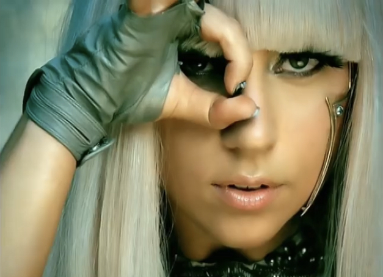

Carriera
Ha debuttato nel 2008 con l'album The Fame,da cui sono stati estratti alcuni singoli come Just Dance e Poker Face. Il secondo album in studio della cantante, Born This Way, pubblicato nel 2011, ha raggiunto il primo posto negli Stati Uniti d'America e in altri venti stati. Ad oggi, la cantante ha venduto circa 124 milioni di copie.
